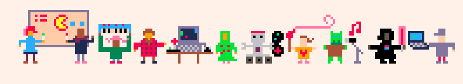
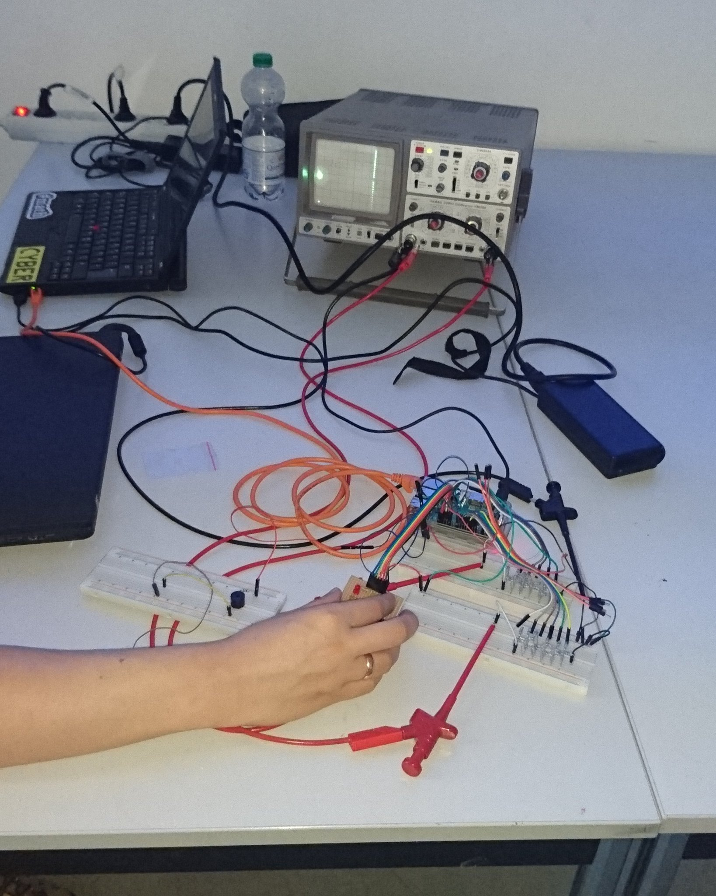

Am 10.06.2017 fand der erste Game Jam in Dortmund statt - noch ein wenig zaghaft als Mini Game Jam tituliert. An einem sonnigen Samstag fanden sich ca. 20 interessierte Entitäten im Dortmunder Künstlerhaus direkt hinter dem Hauptbahnhof ein, um in nur acht Stunden ein vollständiges Spiel zu programmieren. Nach einer kurzen Kennenlernrunde haben sie Teams gebildet und konnten ein Thema aus den Vorschlägen "Familie", "Grenzen überwinden", "old school" und "Zwei Buttons" auswählen.
Ich selbst bildete mit Reinhard und Miriam ein Team, das mit keiner konkreten Idee für ein Spiel, aber für dessen Ausgabemedium startete.

Wir wollten ein Oszilloskop als Bildschirm verwenden. Normalerweise werden diese Geräte benutzt, um Wechselspannungen in Kurven zu visualisieren. Wenn man den Elektronenstrahl jedoch geschickt umlenkt und als analoges Signal auf zwei Eingangskanäle sendet, kann im XY-Betrieb faktisch Beliebiges auf dem Geräte dargestellt werden - soweit zumindest die Theorie. Wir haben einen Digtial-Analog-Wandler aus Widerständen erstellt und mit einem RaspberryPi angesteuert. Damit waren wir in der Lage, eine bescheidene Auflösung von 32x64 Bildpunkten auf dem Gerät darzustellen. Bei höheren Auflösungen flackerte das Bild aus Gründen, die wir in der kurzen Zeit nicht ergründen [STRIKEOUT:konnten] wollten.
Nach ca. drei Stunden konnten wir beliebige Punkte auf dem Gerät positionieren und uns (endlich) um eine Spielidee kümmern. Wenig kreativ und motiviert durch die technischen Einschränkungen entschieden wir uns für eine Abwandlung des bekannten Spiels "flappy bird", in dem ein Vogel zwischen Röhren hindurch manövriert werden muss. Gesteuert wird der Vogel mit nur einem Taster: beim Drücken fliegt der Vogel hinauf, lässt man den Button wieder los, sinkt er wieder. Diese Steuerung haben wir über eine kleine Platine mit zwei Tastern realisiert - der zweite Taster konnte das Spiel nach einem Game Over neu starten.
Da noch etwas Zeit übrig war, konnten wir uns Gedanken über eine Audioausgabe machen. Diese erfolgte über zwei kleine "Lautsprecher", die wir ebenfalls über den Raspberry Pi angesteuert haben.
Das Projekt ist inklusive des Quelltextes bei github unter dem Namen osziflap abrufbar.
Am 7.10.2017 geht es (vielleicht?) weiter mit dem nächsten Game Jam - vielleicht nicht mehr Mini, vielleicht wieder in Dortmund, gewiss aber wieder mit mir.